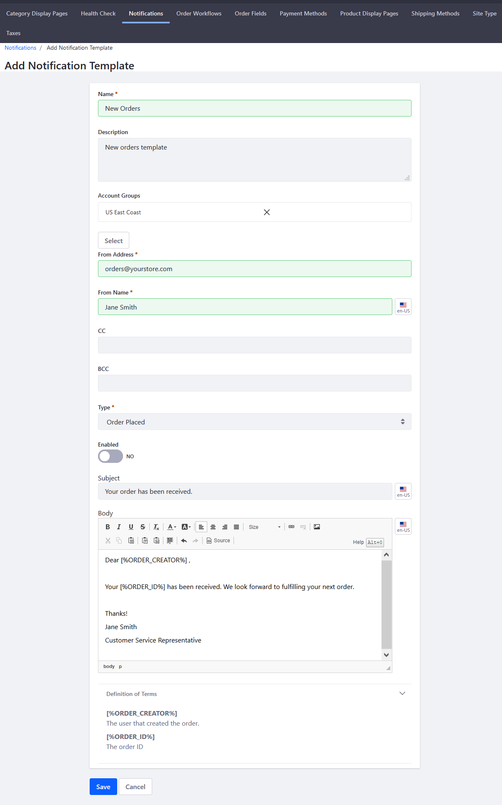
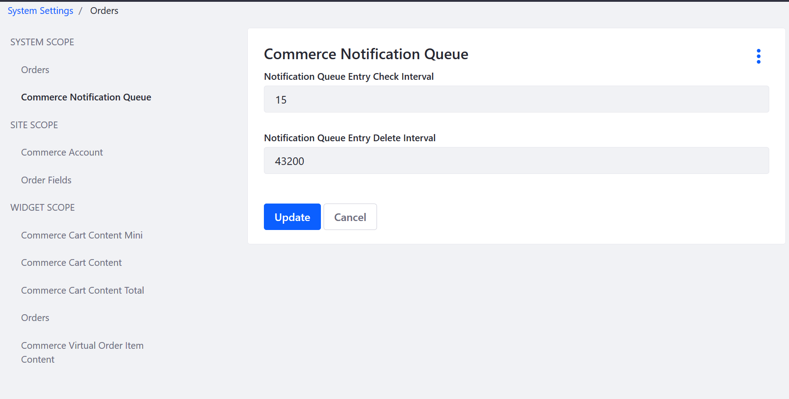

Automating Store Emails by Using Notification Templates¶
Notifications are automated emails sent to users. To send email notifications, first create a Notification Template. Notification Templates define the notification sender, trigger, and content of an email notification.
Note: To use Liferay Commerce’s Notifications feature, system administrators first have to configure the Mail settings for Liferay Digital Experience Platform (DXP). See User Subscriptions and Mailing Lists for more information.
Once the Mail settings have been configured, follow these steps to create a notification for a received order:
Navigate to Site Administration → Commerce → Settings.
Click the Notifications tab.
Click the Notification Templates sub-tab.
Click the (+) button to create a new Notification Template.
Enter the following:
- Name: New Orders
- Description: New orders template
- Account Groups: (leave blank or designate an optional account group)
- From Address: Your store’s email address (for example: orders@yourstore.com)
- From Name: Name of the store or a customer service representative
- Type: Order Placed
- Enabled: Switch the Toggle to YES
- Subject: Email subject (for example: Your order has been received.)
- Body: Email body *

Click Save.
The new Notification Template has been saved and your store will send an automated email to buyers after the store has received their order. Once the template is created, a new notification is added to the notification queue whenever an order is placed. Check the Notifications Queue sub-tab when an order has been placed. Liferay Commerce checks the queue at specified intervals to send any unsent notifications.
Additional Notifications¶
Note 1: * Liferay Commerce offers two snippets to insert programmatically the order creator’s name and the order ID.
- [%ORDER_CREATOR%] inserts the user who created the order
- [%ORDER_CREATOR%] inserts the Order ID
Note 2: An extension point lets you implement other notifications: for a shipped order, a restocked product, a carrier exception, or any other event.
Note 3: To change the interval for when Liferay Commerce checks for unsent notifications, navigate to the Control Menu → Configuration → System Settings. Click Orders then the Commerce Notification Queue. The default values are listed in minutes. Change the values for the Check Interval and the Delete Interval if necessary.
